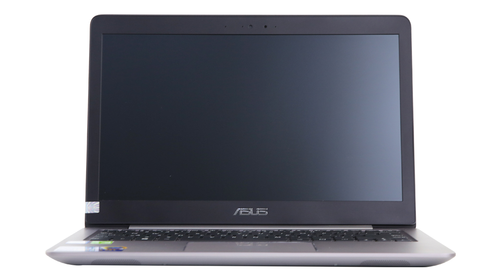

19.990.000
Thông số kỹ thuật CPU: Intel, Core i5 Skylake, 6200U, 2.30 GHz RAM: DDR4 (On board +1 khe), 4 GB, 2133 MHz Đĩa cứng: HDD + SSD, HDD: 500GB + SSD: 128GB Màn hình rộng: 13.3 inch, FHD (1920 x 1080 pixels) Cảm ứng: Không Đồ họa: NVIDIA GeForce 940MX, 2 GB Đĩa quang: Không Webcam: 1 MP Chất liệu vỏ: Vỏ kim loại Cổng giao tiếp: 2 x USB 2.0, HDMI, USB Type-C, USB 3.0 Kết nối khác: Bluetooth v4.0 PIN/Battery: Li-Ion 3 cell Trọng lượng: (Kg) 1.45 kg